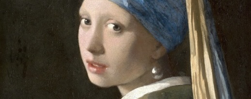
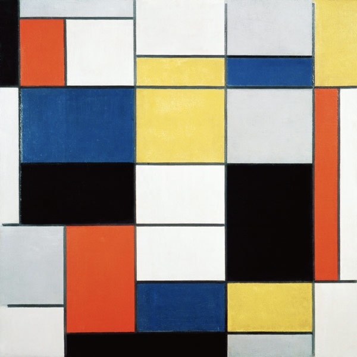

Scrivi il titolo dell'opera e scopri dov'è
Il progetto
Il catalogo "Trova la tua opera" è un progetto di Rachele Borotto Dalla Vecchia studentessa del corso di Digital Humanities e Patrimonio culturale dell'Università di Bologna. L'obiettivo principale del progetto è quello di garantire all'utente un servizio di continuo aggiornamento sulla localizzazione di uno o più beni mobili che vuole studiare dal vero tramite la catalogazione, la metadatazione, la preservazione e la valorizzazione dei più noti beni mobili storico artistici a livello Nazionale ed Internazionale.
Esplora le città
Lasciati ispirare!
Scopri nuove opere e scegli il prossimo museo o la prossima mostra da visitare.

Cristo morto in pietà, il Perugino

Il bacio, Auguste Rodin

Autoritratto, Vincent Van Gogh

Composizione A, Piet Mondrian
Credits | Licenze